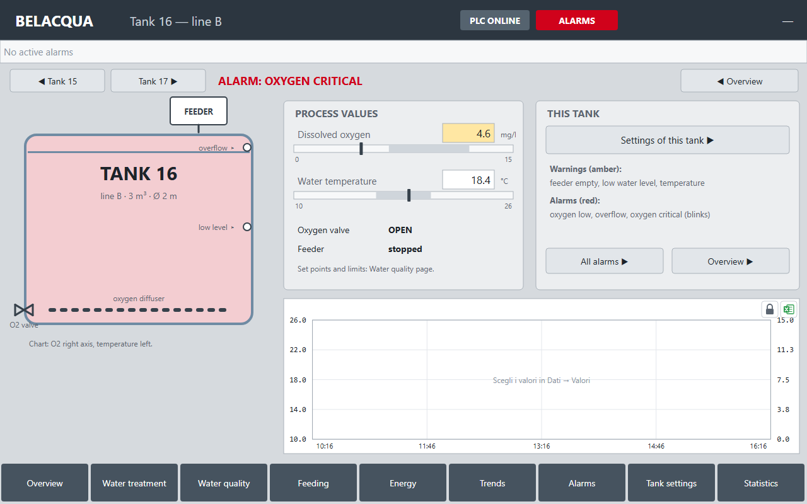
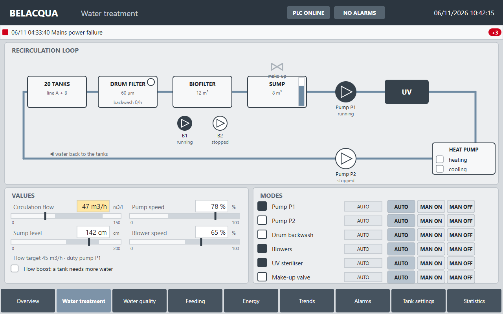
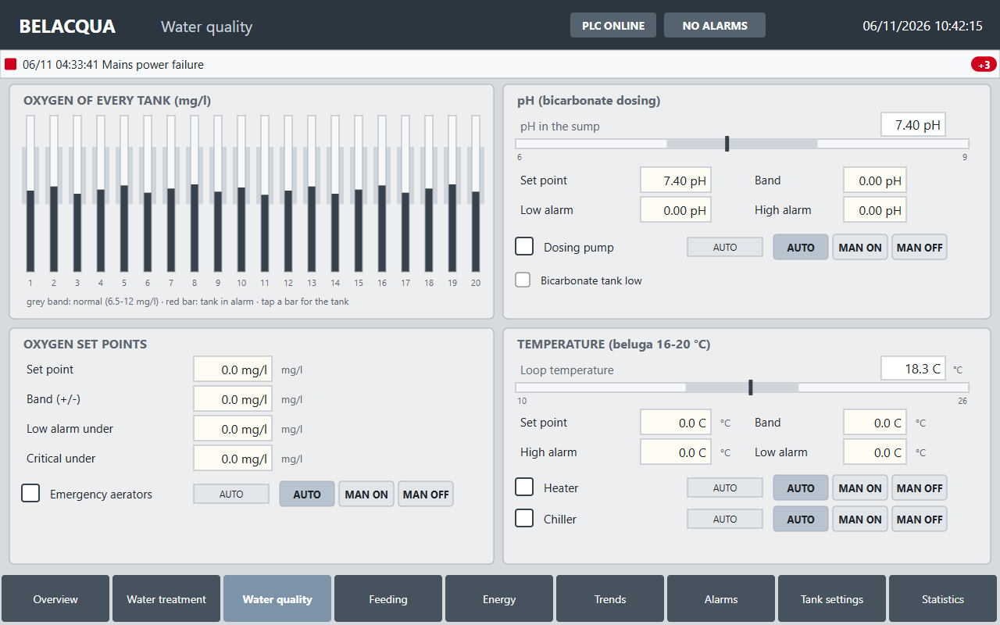
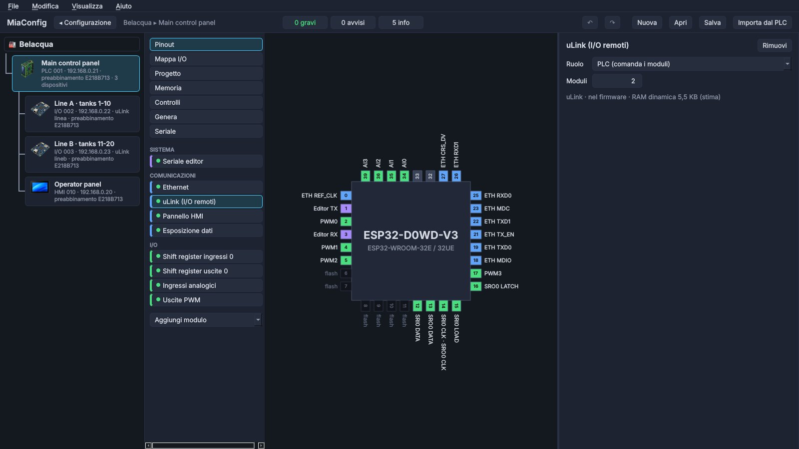
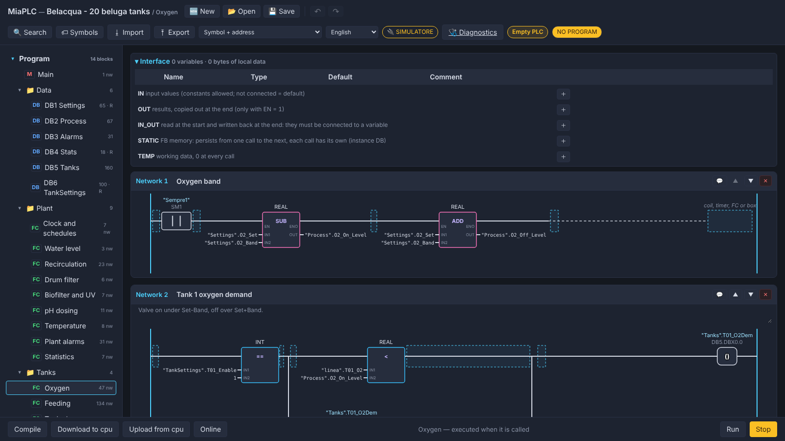
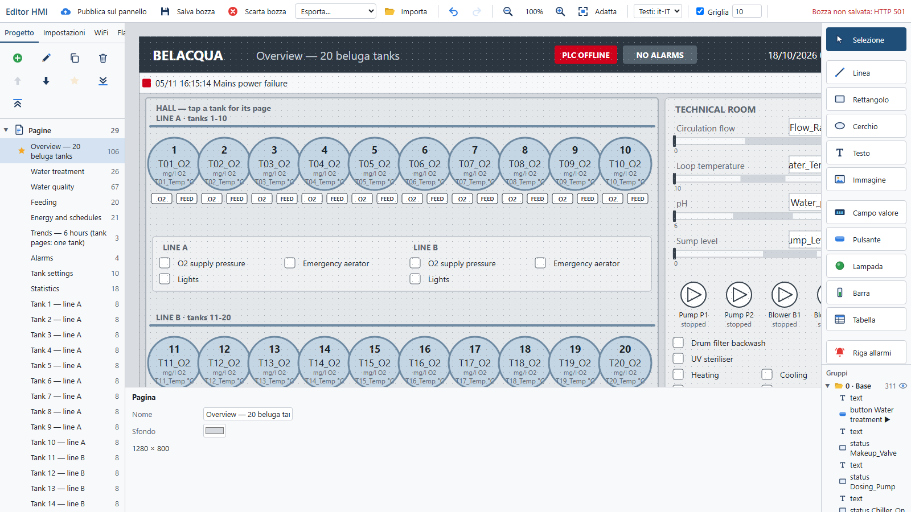

Belacqua: 100 sturgeons in 20 tanks
A real plant, not two lamps: a recirculating farm for beluga sturgeons run by a MIAplc PLC, two µLink I/O modules on the tank lines and a 10.1" touch panel. Projects, program, panel and manual are free to download.
A design example, not yet tested on a real plant: the wiring diagrams must be adapted to the real plant and its rules.

The plant
Beluga sturgeons need cool, clean, well oxygenated water: 16–20 °C, oxygen above 7 mg/l, pH between 7 and 8. The 20 tanks of 3 m³ share one loop: the water leaves the tanks, goes through the drum filter, the biofilter and the sump, is pumped back, sterilised by UV, heated or cooled and returns to the tanks. Every tank has its own oxygen and temperature probe, oxygen valve, automatic feeder and overflow and low-level floats.
- Recirculation with 2 VFD pumps, duty and standby, swapped every 24 h and at once on a fault
- Pump speed following the flow: the lowest that is enough (power grows with the cube of the speed)
- Oxygen controlled tank by tank, emergency aerator per line
- pH correction in pulses, heating and cooling with a wider band in the peak tariff hours
- 8 meals a day, a fasting day, portion from fish × weight; meal skipped when the water is not good
- Lights, night backwash, lower flow at night: energy saving
- Every actuator in Auto, Manual ON or Manual OFF; 26 plant alarms and 6 per tank
- Running hours, meals, feed and estimated pump energy of the day
The panel, designed like industrial ones
The panel project follows ISA-101 for high-performance HMIs: grey background, colour only when something is wrong, values as pointers on a scale with the normal band, machines filled when running and hollow when stopped. Three levels of pages: the hall overview, the process pages and one page for every tank.



Three programs, one plant
Belacqua is built with the three MIAplc programs, and each has its own file in the projects zip: MiaConfig puts the plant and the hardware together, the MIAplc editor writes the PLC program, the MiaHMI editor draws the panel.
The plant and the hardware
Open belacqua.mia («Apri configurazione…»): on the left the four devices, the PLC with the two µLink modules
and the panel under it, each with its board and IP address. For every board you choose what is on its pins and which modules it uses.
- Shift registers (32 inputs, 32 outputs), 4-20 mA, PWM to the VFDs
- Ethernet, µLink with the 2 modules, HMI data for the panel, data exposure
- Builds the firmware of every board
- «Carica tutto…»: firmware, program and panel on all the boards
Files: belacqua.mia and one .mia in every device folder (MiaConfig is in Italian)

The PLC program
Open belacqua_plc_001.miaplc in the MIAplc editor: 369 ladder networks in 13 functions, one per part of the plant,
with the tank DBs and readable symbols. You can also try it without boards, in the simulator.
- Clock and schedules, water level, recirculation with the VFD pumps
- Drum filter, biofilter and UV, oxygen tank by tank, pH, temperature
- Feeding, tank and plant alarms, tank settings, statistics of the day
- Every actuator in Auto, Manual ON or Manual OFF
File: belacqua_plc_001/belacqua_plc_001.miaplc

The operator panel
Open belacqua_hmi_010.miahmi in the panel editor (Import): 29 pages, 146 alarms and 46 recorded values.
The variables come from the PLC through the HMI data, with the same names as in the program.
- Hall overview, process pages, one page per tank
- Alarms with acknowledge, 24-hour trends, export to a USB stick
- ISA-101 style: grey when all is well, colour only when something is wrong
File: belacqua_hmi_010/belacqua_hmi_010.miahmi

The hardware
PLC
ESP32-EVB with 32 inputs and 32 outputs on shift registers, 4 analog 4-20 mA inputs, PWM to the VFDs. µLink master, HMI data for the panel, data exposure in JSON for other programs.
µLink I/O modules
One per line, in a box in the middle of the 10 tanks: 20 analog channels (4 internal + 4 ADS1115) for oxygen and temperature, inputs and outputs on shift registers. One Ethernet cable back to the panel.
HMI panel
ESP32-P4 with a 10.1" touch screen: 29 pages, 146 alarms, 46 recorded values (oxygen and temperature of every tank), export to a USB stick.
The manual has the hall layout with the network run, the panel and the modules, the network with its addresses, the single-line diagram of the control panel, the wiring of inputs, outputs, 4-20 mA and VFDs, the I/O lists, the program, the alarms, the settings and the commissioning step by step.